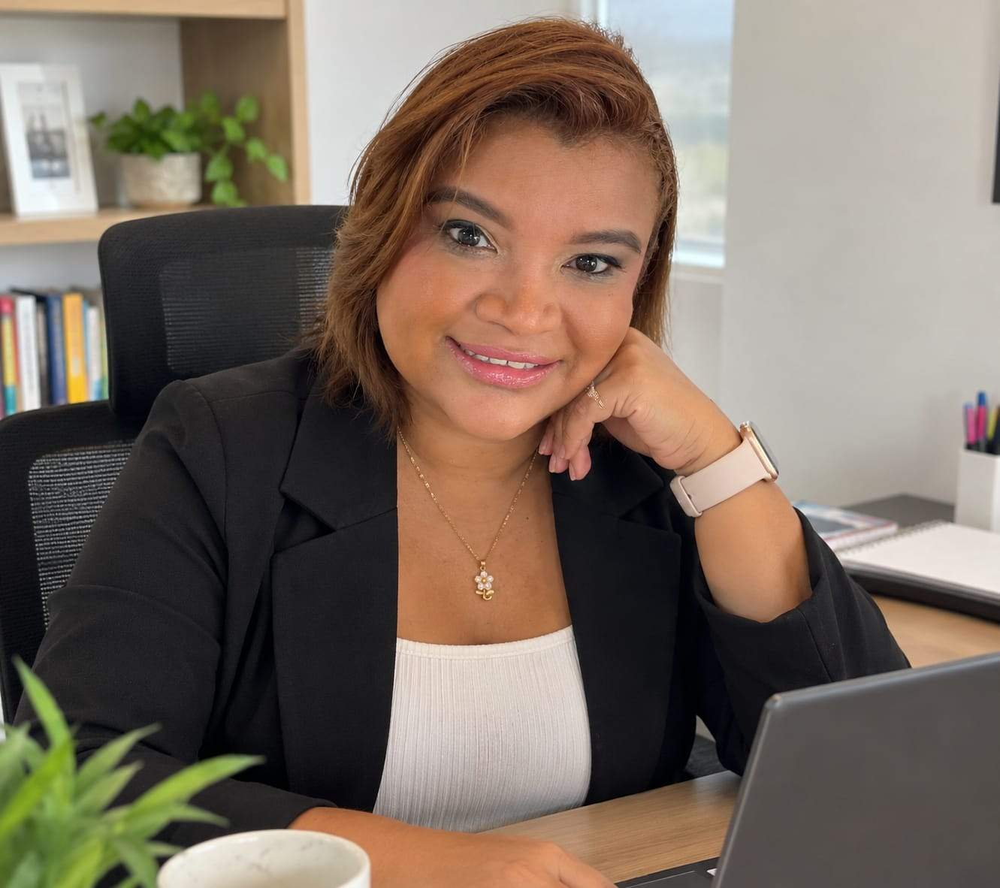

1 experiencia disponible
Semillero de investigación
De las primeras preguntas a la construcción de problemas de investigación sustentados en evidencias.
Experiencia publicada
Laboratorio de Investigación
Explora experiencias académicas que convierten los conceptos en preguntas, decisiones, actividades y nuevas formas de comprender el mundo profesional.
Explorar experienciasNuestra ruta
Colección académica
Esta colección crecerá con cada nueva clase. Ya puedes explorar el Laboratorio de Investigación y el Laboratorio 1 de Métodos y Tiempos. Seguiremos incorporando nuevas experiencias.
De las primeras preguntas a la construcción de problemas de investigación sustentados en evidencias.
Aprende a interpretar indicadores, comparar alternativas y comprender decisiones financieras mediante casos y herramientas prácticas.
Selecciona una asignatura para acceder a sus laboratorios y experiencias de aprendizaje. Nuevas materias se incorporarán progresivamente.

Detrás de las experiencias
Mg. Vicky Ruiz · Ingeniera Industrial · Magíster en Dirección y Administración de Empresas
Con más de 14 años de trayectoria universitaria, concibo la enseñanza como una oportunidad para conectar preguntas, conocimientos y decisiones reales. Mi trabajo integra la ingeniería, las finanzas, la investigación y la creación de experiencias académicas que invitan a aprender haciendo.
Materiales creados para conectar el conocimiento académico con preguntas, problemas y decisiones del ejercicio profesional. Un proyecto educativo que seguirá creciendo, clase a clase.